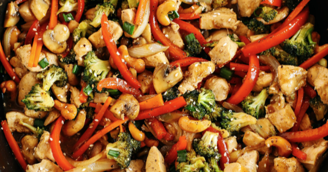

Stir Fry

This quick and easy chicken stir fry recipe is sure to become a mainstay in your weeknight dinner rotation.
Chicken breasts and chicken thighs both work well for stir fries. Just make sure the pieces are relatively small and thin. Plus, they should be about the same size so the chicken cooks evenly.
Ingredients:
- 4 cups water
- 2 cups white rice
- ⅔ cup soy sauce
- ¼ cup brown sugar
- 1 tablespoon cornstarch
- 1 tablespoon minced fresh ginger
- 1 tablespoon minced garlic
- ¼ teaspoon red pepper flakes
- 3 skinless, boneless chicken breast halves, thinly sliced
- 2 tablespoons sesame oil, divided
- 1 head broccoli, broken into florets
- 1 onion, cut into large chunks
- 1 cup sliced carrots
- 1 (8 ounce) can sliced water chestnuts, drained
- 1 green bell pepper, cut into matchsticks
Steps:
- Bring water and rice to a boil in a saucepan over high heat. Reduce heat to medium-low, cover, and simmer until rice is tender, and liquid has been absorbed, 20 to 25 minutes.
- Meanwhile, combine soy sauce, brown sugar, and cornstarch in a medium glass or ceramic bowl; stir until smooth. Stir in ginger, garlic, and red pepper flakes; add chicken and stir to coat. Cover and marinate in the refrigerator for at least 15 minutes.
- Heat 1 tablespoon sesame oil in a wok or large skillet over medium-high heat. Add broccoli, onion, carrots, water chestnuts, and bell pepper; cook and stir until just tender, about 5 minutes. Transfer vegetables into a dish; set aside.
- Heat remaining 1 tablespoon sesame oil in the same wok or skillet over medium-high heat. Add chicken, reserving marinade, and cook until just browned, about 2 minutes per side; stir in vegetables and reserved marinade. Bring to a boil; cook and stir until chicken is no longer pink in the center and vegetables are tender, 5 to 7 minutes. Serve over rice.
Recipe sourced from: Katie Sechrist / allrecipies.com